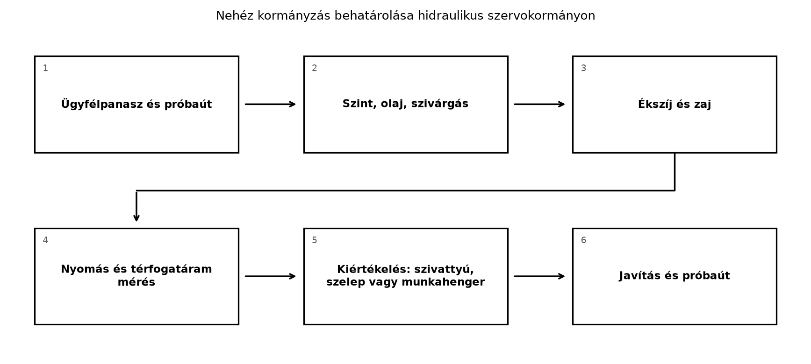

A műhelyben gyakori panasz: „nehéz a kormány”, „búg a szervó”, „fogja a kormányt”, „rezeg a kormány beállásnál”. Az autószerelő ilyenkor ne csak alkatrészt cseréljen, hanem mérje meg a hidraulikus kör jellemzőit: nyomás, térfogatáram, szivárgás, hőmérséklet. Ugyanez a gondolkodásmód kell más hidraulikus rendszereknél – például hidraulikus ventilátornál, tehergépkocsi-platóemelőnél, szerszámhordozó körnél –, mert a panasz hátterében lehet szivattyú, szelep, munkahenger, tömlő vagy akár rossz folyadék is.
Ebben az alfejezetben a zárt és nyitott hidraulikus körök ellenőrző méréseit, a hidraulikus szervokormány diagnosztikáját és az elektromechanikus szervokormány (EPS) hibakeresését tanuljuk meg.
Képzelj el egy fogasléces, hidraulikus szervokormányt. A szivattyú a motor ékszíjáról hajtva a tartályból szívja az olajat, és a nyomóvezetéken a szervoszelephez szállítja. A szervoszelep a kormánykerékre kifejtett nyomatékkal nyit, és a megfelelő irányba engedi az olajat a munkahenger egyik oldalába. A másik oldali olaj a visszatérő vezetéken át a tartályba jut. A diagnosztika során egy T-idommal a nyomóágba kötünk be egy hitelesített manométert, a visszatérő ágba pedig térfogatáram-mérőt vagy legalább mérőedényt és stopperórát. Így látjuk a kettős jellemzőt: mekkora nyomást tud a szivattyú felépíteni, és mennyi olaj áramlik ténylegesen.
Az ábrán a mérőblokk a szivattyú és a szervoszelep közé, sorosan kerül: elöl a manométer (1), utána a zárószelep (2) és az átfolyásmérő (3). Zárt zárószelepnél (a) a manométer a szivattyú holtnyomását mutatja (példa: 98 bar), nyitott szeleppel és leütközésben tartott kormánnyal (b) a kormányművel együtt mért nyomást (példa: 55 bar). Ha a holtnyomás jó, de leütközésben a nyomás jóval kisebb, a nyomás a kormányműben (szervoszelep vagy munkahenger) szökik el; ha már a holtnyomás is alacsony, a szivattyú vagy a nyomáshatároló a hibás. A HTML-változat a mérést lépésenként játssza le.
Definíció. Nyitott hidraulikus rendszer az, amelyben a szivattyú a szabad – a légkörrel érintkező – tartályból szív, a visszatérő olaj pedig ugyanabba a tartályba kerül vissza. A nyitott rendszer szivattyúja gyakran állandó térfogatáramú, és a fogyasztó nem működésekor a folyadék egy nyitott középállású szelepen vagy nyomáshatárolón át recirkulál.
Definíció. Zárt hidraulikus rendszer – más néven hidrosztatikus kör – az, amelyben a folyadék a szivattyú és a fogyasztó (hidromotor, munkahenger) között zárt körben áramlik, a szivattyú bemenetét nem a tartály adja, hanem a fogyasztó visszatérő ága. A belső szivárgások miatt egy kis töltőszivattyú pótolja a folyadékot.
A két rendszer mérési pontjai ezért különböznek:
Összefüggés. A hidraulikus teljesítmény:
ahol a nyomáskülönbség (Pa), a térfogatáram (m³/s). A szivattyút meghajtó mechanikai teljesítmény:
ahol a hidraulikus és mechanikai hatásfok szorzata.
Szabály. A mérés során mindig a gyártói javítási utasításban megadott mérési pontokon, mérési csatlakozókon és lezárási eljárással dolgozzunk. A mért értéket a gyártói határértékekkel hasonlítjuk össze.
A nyomásmérőt mindig a nyomóágba, a szivattyú és a fogyasztó közé, lehetőleg a gyártói tesztcsatlakozóra kötjük. A mérőműszer legyen az adott nyomástartományra alkalmas; hidraulikus szervokormánynál a csúcsnyomás gyakran 80–120 bar körül van, ezért legalább 160–250 bar méréshatárú műszert válasszunk (ellenőrizendő: a jármű gyártói adata, mert típusfüggő). A mérőcsatlakozó gyári O-gyűrűjét sérülésmentesen kell visszaszerelni. A méréshez a motort alacsony fordulaton járatjuk.
Figyelem. A kilépő hidraulikafolyadék-sugár a bőrbe hatolva súlyos, akár maradandó sérülést okoz; a nyomás alatti rendszert tilos bontani. A nyomásmentesítést a gyártói eljárás szerint végezzük, a kormányt a mérés közben ne tarthassuk hosszan leütközésben, mert az olaj hirtelen felmelegszik.
A térfogatáramot a nyomó- (vagy visszatérő) ágba sorosan bekötött
átfolyásmérővel mérjük, járó motornál, zárt körben
(ellenőrizendő: gyártói mérési eljárás és határérték). A
visszatérő ágat nyitott mérőedénybe vezetni tilos: a szivattyú teljes
szállítása (néhány l/min) a tartályt másodpercek alatt kiüríti, a
szivattyú szárazon fut, és a forró olaj kifröccsenhet. A mérés előtt az
olajszintet a gyártói jelölésre ellenőrizzük, és a rendszert
légtelenítjük. A szivattyú hideg olajjal nagyobb térfogatáramot
szállíthat, mint melegen, ezért a mérési feltételeket – hőmérséklet,
fordulatszám – rögzíteni kell.
A szivárgásmérés a belső tömítések állapotáról ad képet: ha a szivattyú meleg olajjal, terhelés alatt nem tudja a gyártói térfogatáramot, akkor a szivattyú belső szivárgása nőtt meg, vagy a szervoszelep fojtása hibás.
1. példa – nyomáskülönbségből származó rásegítő
erő.
Adott: a szervokormány munkahengerének hatásos dugattyúfelülete
,
a mért nyomáskülönbség
.
Keresett: a munkahenger rásegítő ereje.
Képlet:
.
Behelyettesítés:
;
.
Számolás:
.
Ellenőrzés: egy 8 cm² felületű dugattyú 80 baron 6,4 kN erőt ad, ami a
valós szervorásegítő erő nagyságrendjébe illik.
2. példa – hidraulikus teljesítmény és
szivattyúhajtás.
Adott: nyomáskülönbség
,
térfogatáram
,
összhatásfok
.
Keresett: a hidraulikus teljesítmény és a szivattyú mechanikai
teljesítményigénye.
Képlet:
;
.
Átváltás:
;
.
Számolás:
.
.
Ellenőrzés: a hidraulikus szervó szivattyúja terhelés alatt valóban 1–2
kW körüli tengelyteljesítményt vehet fel, a mért adatsor tehát
reális.
A hidraulikus szervokormány diagnosztikájának lelke a
leütközési nyomásmérés. A kormányt óvatosan, lassan a
végállásig forgatjuk, és a manométerről leolvassuk a csúcsnyomást. A
végállásban a szervoszelep egyrészt zár, másrészt a nyomáshatároló is
működésbe lép; az elérhető csúcsnyomást ezért a nyomáshatároló
beállítása szabja meg; ha a csúcsnyomás a gyártói érték alatt marad, a
szivattyú, a nyomáshatároló vagy a belső szivárgás a gyanús. A
holtnyomás-mérést a manométerrel együtt kötött zárószeleppel végezzük: a
szelepet legfeljebb néhány másodpercre zárjuk
(ellenőrizendő: gyártói előírás, jellemzően 5 s), mert
hosszabb zárásnál az olaj hirtelen túlmelegszik, a szivattyú és a tömlők
károsodnak. Ha a holtnyomás eléri a gyártói értéket, de leütközéskor
kisebb nyomást mérünk, a szivárgás a kormányműben (szervoszelep,
munkahenger) van; ha a holtnyomás is alacsony, a szivattyú vagy a
nyomáshatároló a hibás.
Ha a nyomás gyengén épül fel:
A szivárgás közvetett meghatározása nyomás alatt, szabályozott terheléssel, az átfolyásmérő és a manométer adataiból történik. Ha a szállított térfogatáram a gyártói érték alatt marad, és a nyomás sem éri el a gyártói csúcsértéket, a szivárgás a rendszeren belül van – leginkább a szivattyú vagy a szervoszelep felületpárjain. A mérési adatokból gyakran nem lehet egyértelműen azonosítani a hibás komponenst, ezért jól bevált módszer a szekunder mérés: a nyomóvezeték és a szervoszelep közötti szakasz fokozatos lezárása, a szivattyú holtnyomásának mérése, majd összehasonlítás a rendszerből származó csúcsnyomással.
Az EPS-ről az Szervokormányok: hidraulikus, elektrohidraulikus, elektromechanikus és aktív kormányzás alfejezetben tanultuk: nincs hidraulikaolaj, a rásegítést villanymotor adja. A diagnosztika itt három pilléren áll:
Példa. Ha az EPS hibakódja „nyomatékérzékelő belső ellenőrző jel eltérés”, akkor az érzékelőt nem szabad azonnal cserélni; előbb a csatlakozó tápfeszültségét, a jelvezetékek állapotát, a vezérlőegység szoftverfrissítését és a gyártói mérési útmutatót kell követni. A hibakód a vezérlés biztonsági kikapcsolását is okozhatja, ami nehéz kormányzást eredményez.
Biztonsági korlát. A feladat tanműhelyi környezetre, oktató felügyeletére és a gyártói javítási utasítás betartására vonatkozik; a megadott értékek tanulási példák.
Figyelem. A hidraulikus rendszer nyomás alatt álló csatlakozóját, tömlőjét vagy mérőpontját tilos megbontani. A mérés megkezdése előtt a rendszert a gyártói eljárás szerint nyomásmentesíteni kell, a motor leállításával, a kormány óvatos mozgatásával (hidraulikus szervokormánynál), és a csatlakozókat csak ezután szabad oldani. A kifutó olajat gyűjtőedénnyel kell felfogni; a forró folyadék égési sérülést okozhat.
Környezetvédelem. A hidraulikaolaj veszélyes hulladék lehet, ezért fáradt olajat, tisztítórongyot és szűrőket a műhely veszélyeshulladék-nyilvántartása szerint kell gyűjteni (ellenőrizendő: a hatályos hulladékgazdálkodási előírás). A kiömlött olajat fel kell itatni, és nem mosható csatornába.
Az alábbi ellenőrzőlista segít a mérési terv felállításában:
Egy személyautó ügyfele arról panaszkodik, hogy hideg motorral a kormány könnyű, de melegen, városi araszolás után nehézzé válik. Az olajszint jó, a szíj feszes, szivárgás nem látható. A nyomásmérőt a nyomóágba kötve hidegen a csúcsnyomás 98 bar, melegen 55 bar; az átfolyásmérővel mért térfogatáram melegen feltűnően kicsi. A kopás miatt megnőtt a belső rés; meleg olajnál a viszkozitás erősen csökken, ezért ugyanazon a résen sokkal több olaj folyik vissza, és a szivattyú nem tudja felépíteni a nyomást. A javítás a szivattyú felújítása, mert a belső rés a gyártói kopási határ felett volt. A csere után a légtelenítést és a leütközési nyomás ellenőrzését is elvégeztük.
Biztonsági korlát. A feladat tanműhelyi környezetre, oktató felügyeletére és a gyártói javítási utasítás betartására vonatkozik; a megadott értékek tanulási példák.
Cél: a nehéz kormányzás okának behatárolása.
Szükséges eszközök: védőkesztyű, védőszemüveg, gyűjtőedény, tisztítórongy; kulcskészlet, racsni, nyomatékkulcs; gyártói mérési adatok; hidraulikus manométer (0–250 bar) zárószeleppel, T-idom és adaptersorozat; átfolyásmérő; rendszerteszter EPS-vizsgálathoz; hőmérő.
Munkalépések:
Tipikus hibák a mérés közben: a leütközés túl hosszú tartása, a gyári mérési pont elkerülése, az eltérő viszkozitású, nem megfelelő olaj használata.
A következő számozott lépéssor a hibakeresés vázlata:

1. feladat (A)
Egy hidraulikus munkahenger dugattyúfelülete
,
a mért nyomáskülönbség
.
Mekkora a rásegítő erő? Az eredményt add meg newtonban.
2. feladat (A)
Egy hidraulikus szivattyú
térfogatáramot szállít
nyomáskülönbség mellett. Hatásfoka
.
Mekkora a hidraulikus teljesítmény és a szivattyú mechanikai
teljesítményigénye?
3. feladat (B)
Sorold fel két oszlopban a nyitott és a zárt hidraulikus kör
legfontosabb mérési pontjait, és indokold, miért nem mérhető ugyanott a
szivárgás a két rendszerben.
4. feladat (B)
A szervokormány mérésénél hideg olajjal a csúcsnyomás 92 bar, az
átfolyásmérő 6,5 l/min térfogatáramot mutat. Melegen a csúcsnyomás 50
bar, a térfogatáram 3,8 l/min. Értékeld az eredményt: mi a
valószínűsíthető hiba, és milyen további mérést javasolsz?
5. feladat (C)
Egy EPS-rendszerű autó kormánya jobbra könnyű, balra nehéz, egyenes úton
a jármű enyhén jobbra húz. Hibakód nincs. A nyomatékérzékelő jele
középállásban 2,9 V, jobbra terhelve 4,0 V, balra 1,8 V (gyártói
példaérték: középen 2,5 ± 0,1 V; ellenőrizendő). Milyen hiba lehetséges,
és miért nem szabad alkatrészt cserélni a mérés nélkül?
6. feladat (D)
Írd le a hidraulikus szervokormány diagnosztikai mérésének lépéseit, ha
az ügyfél panasza „reggel első indításnál csikorog, és a kormány
akadozik”. Melyik mérési pontot ellenőrzöd először, és mi a lehetséges
ok?
Önellenőrzés – válaszok
1. feladat megoldása
;
;
.
2. feladat megoldása
;
;
.
.
3. feladat megoldása
Nyitott rendszerben a szivattyú szívóágában vákuumot, a nyomóágban
nyomást, a visszatérő ágban nyomást és térfogatáramot mérünk; a
szivárgás a rendszerből a tartályba folyó olajmennyiségből látható. Zárt
rendszerben a kör zárt, a szivárgás a töltőszivattyú által pótolt
folyadékmennyiségből, a töltőnyomásból és a rendszer melegedéséből
állapítható meg. Ugyanott mérni szivárgást nem lehet, mert a zárt körön
belül a folyadék nem a tartályba távozik.
4. feladat megoldása
Hidegen a térfogatáram 6,5 l/min, melegen 3,8 l/min (a csökkenés 2,7
l/min, azaz kb. 42%). A melegen lecsökkenő csúcsnyomás és a lecsökkent
szállított mennyiség a kopott, nagy résű szivattyú meleg olajnál (a
viszkozitás csökkenése miatt) fellépő megnövekedett belső szivárgására
utal. Javasolt: a szivattyú holtnyomásának mérése, a szívóoldali vákuum
ellenőrzése, majd a szivattyú felújítása vagy cseréje a gyártói útmutató
szerint.
5. feladat megoldása
A jel +0,4 V nullponteltolódást mutat (2,9 V a 2,5 V helyett), ezért a
vezérlő jobbra irányuló kézi nyomatékot érzékel, és jobbra rásegít.
Mivel a jel a megengedett tartományon belül van, hibakód nem keletkezik.
Teendő: tápfeszültség és testpont mérése, csatlakozó ellenőrzése, majd a
nyomatékérzékelő nullpont-kalibrálása a gyártói eljárással; csere csak
sikertelen kalibrálás után.
6. feladat megoldása
Első lépés a szint, az olaj habzásának, a szivattyú szívóoldali
tömítésének ellenőrzése, mert a reggeli csikorgás és akadozás
leggyakrabban levegőbeszívás miatti habzó olaj. Ezt követően hideg
indításnál szívóoldali vákuummérést végzünk, ellenőrizzük a
szíjfeszességet, majd nyomásmérést. A levegő a szívócső repedésén, rossz
tömítésén juthat be; a javítás után légtelenítés és próbaút
szükséges.
A hidraulikus rendszer diagnosztikája a nyomás, térfogatáram, szivárgás és hőmérséklet együttes mérésére épül. Nyitott körben a szivattyú szívóoldala, nyomóoldala, visszatérő ága és a tartály folyadékmennyisége mérhető; zárt körben a főági nyomáskülönbség, a töltőnyomás és a pótolt folyadékmennyiség a jellemző adat. A hidraulikus szervokormánynál a leütközési csúcsnyomás, a visszatérő szivárgás és a szívóoldali tömítettség a hibabehatárolás kulcsmérései; a hiba lehet szivattyú, szervoszelep, munkahenger, szíjhajtás vagy levegős rendszer. Az elektromechanikus szervokormány diagnosztikája hibakód-, élő adat-, nyomaték- és kormányszög-jel-mérésre, valamint kalibrálásra épül. Nyomás alatt a hidraulikus rendszert tilos bontani; a munkát a gyártói javítási utasítás szerint, légtelenítéssel és a használt olaj szakszerű kezelésével kell végezni.
Továbbvitt eredmény. A hidraulikus kör mérése – nyomás, térfogatáram, szivárgás – és a gyártói adatokkal való összehasonlítás az Futómű és kormány szerelése: kerékcsapágy, szilent, gömbcsukló, rugó, lengéscsillapító, kormánymű alfejezetben a szervokormány-javításnál, valamint a Gépkezelő általános ismeretei: hidraulika, pneumatika, gazdaságos üzemeltetés, adminisztráció, hibaelhárítás alfejezetben az általános hidraulika-hibaelhárításnál tér vissza.
Forrástípusok: gyártói javítási utasítások (szervokormány rendszerdiagnosztika, EPS-kalibrálás), ISO 1219 szabványcsalád a hidraulikus rajzjelekre, járművillamossági és hidraulikus diagnosztikai tankönyvek, valamint a munkavédelmi és hulladékgazdálkodási előírások. A megadott nyomás- és térfogatáram-értékek, csúcsnyomások, hatásfokok, kopási határok és a kalibrációs eljárások tanulási példák (ellenőrizendő: az adott jármű gyártói adatai; a hidraulikus rendszer biztonsági előírásai, a veszélyes hulladék kezelésére vonatkozó hatályos jogszabályok).